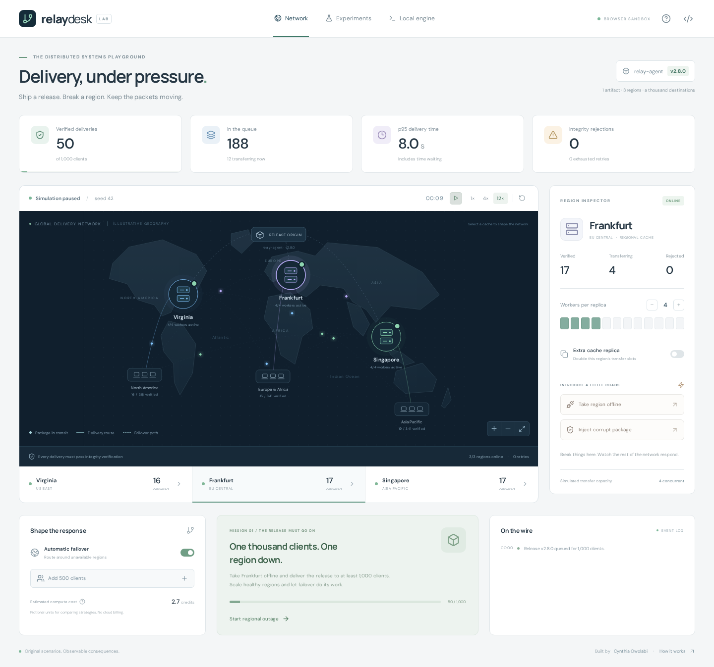

Cynthia Owolabi / Engineering case study
RelayDesk

A release needs to reach clients while a cache is unavailable and another serves corrupt bytes. Delivery is complete only when verified content and durable job state agree.
Two execution paths
The browser simulation makes retries, queues and routing visible across 1,000 synthetic clients. A separate Node.js local lab downloads actual HTTP bytes in worker threads, verifies SHA-256 and length, and records attempts in SQLite. The map and local lab have independent state.
Recovery and ownership
A transactional claim assigns a random ownership token and lease. A completion transaction checks that the worker still owns an unexpired claim. If a worker dies, another can recover the job after expiry; a late worker cannot acknowledge completion.
The worker and coordinator both verify content. The coordinator synchronizes a temporary file, atomically publishes it under its digest, and then commits completion. A crash between publication and acknowledgement can cause another fetch of the same content. This accepts at-least-once fetching while preventing unverified delivery records.
Tradeoffs
SQLite WAL and short write transactions suit this single-machine lab and make recovery inspectable. They do not establish multi-host coordination. Bounded small transfers let the lab use leases without heartbeats; large artifacts would need streaming and lease renewal. A content-addressed file can serve several clients, so client completions are not a count of unique artifacts.
Try the outage
- Open the demo and take Frankfurt offline.
- Watch retries and switch routing policies; compare failures, pending work and latency together.
- Run the strategy comparison to replay identical seeded demand without modifying the active network.
- For actual bytes, follow the README to start the local engine and use its Local engine panel.
Measured model experiment
The recorded comparison uses seed 42, 1,000 arrivals, four workers per cache and a Frankfurt outage at second 15. After 240 simulated seconds:
| Policy | Delivered | Failed | Pending |
|---|---|---|---|
| Pinned | 691 | 309 | 0 |
| Failover | 908 | 0 | 92 |
These are model results. Latency includes queueing for successful requests only; credits are invented units, not cloud prices.
npm ci npm run experiment npm run test:engine
Evidence and limits
Full model report · Nine engine integration tests · Architecture
The engine tests exercise actual EU 503 responses, US checksum mismatches, clean AP transfers, two coordinators, timeout exhaustion and worker termination. The three cache paths are on one local HTTP server. There are no deployed cloud regions, customer endpoints or production throughput claims. The public demo makes no requests to a local backend.